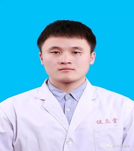
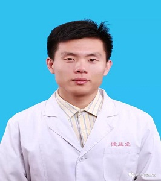

董谦达
毕业于辽宁中医药大学，2014年正式拜入恩师王君济岐轩医学门下，成为第三代岐轩医学传承人。先后研习了田纪钧老师的刃针、周中焕老师、施晓阳老师的针刀高级班课程，主要擅长通过体态评估和岐轩脉法精确诊断，利用刃针、拨针、手法、正骨、功能训练治疗颈椎病、肩周炎、网球肘、腰间盘突出症、坐骨神经痛、膝关节病等疼痛科疾病。

刘鑫
2013年于湖南中医药大学学习针灸适宜技术，同年加入长沙针灸协会。2015年在国家主要刊物上发表“带状疱疹电针治疗方法”。师承陈美仁教授学习传统针灸技术、穴位敷贴疗法穴位和穴位注射疗法。对治疗妇科及五官科有独特见解，如感冒、慢性支气管炎、支气管哮喘、冠心病心绞痛、面神经炎、失眠、颈椎病、腰间盘突出症、月经失调等常见多发疾病治疗效果显著。
